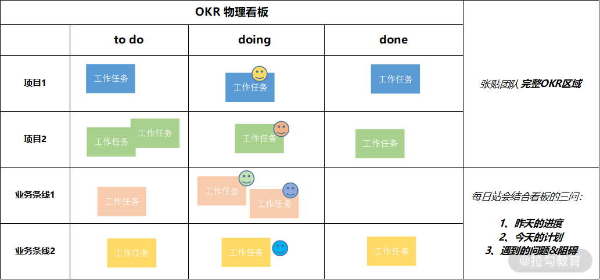
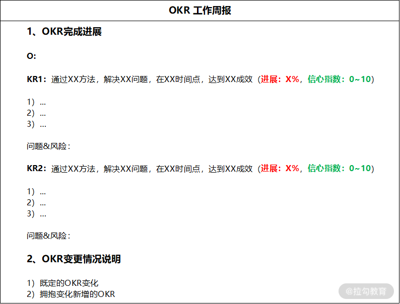

- 00 OKR 工作法：组织目标管理的神器.md.html
- 01 目标管理发展：OKR 之前，大家都在用什么管理组织目标？.md.html
- 02 OKR 价值：为什么互联网公司都在用 OKR？.md.html
- 03 OKR 与战略：OKR 如何解决组织增长问题？.md.html
- 04 OKR 生成：各层级的 OKR 要遵循什么规律？.md.html
- 05 O：什么样的 O 得领导赏识？.md.html
- 06 KR ：写好 KR 的万能公式.md.html
- 07 案例实战：教你写出高质量的 OKR.md.html
- 08 流程：你应该这样制定、管理 OKR!.md.html
- 09 OKR 与 KPI 的区别和联系.md.html
- 10 激励：如何用 OKR 激活你的团队？.md.html
- 11 文化：OKR 文化的塑造和沉淀.md.html
- 12 变革：OKR 转型难点及解决方案.md.html
- 13 加餐 OKR 填写模板及案例.md.html
- 结束语 OKR 工作法：制胜互联网下半场.md.html
- 捐赠
13 加餐 OKR 填写模板及案例
你好，我是留留。
在我们落地 OKR 的过程中，会有很多关键的工作节点，比如 OKR 制定、每日站会、季度中 OKR 评审、季末 OKR 评分等。如果在这些关键节点，能有规范化的讨论内容展现形式和基本流程，就可以提高工作的效率。
接下来，我就把在京东内部实践 OKR 的相关模板分享给你，并从应用场景和具体操作流程上帮你熟悉模板的使用。按照模板中的要素来进行 OKR 运行工作的设计和安排，便于我们及时记录 OKR 进程，也能随时查看和修改，还可以作为 OKR 文化的载体进行传播和互相学习。
当然，只有适合自己的才是最好的，你前期在组织内部导入 OKR 时，可以先参考使用我提供给你的模板，如果感觉用得不太顺，可以基于我的模板进行改善和裁剪，找到适合你组织的应用形态。
模板 1：OKR 制定模板

使用场景：按照组织中绩效制定节奏，在开始制定或是过程中需要新增 OKR 时使用该模板（这里所提供的模板均是基于季度的 OKR 制定节奏来呈现的，下同）。
操作流程：先确定方向 O，再生成每个 O 的 KR，所有 OKR 都需要上下级共识（[可参考 08 课时 OKR 制定流程]，我列举了详细案例说明）。
注意点：
- O 和 KR 要遵循自上往下以及自下而上的生成规律（[参考 04 课时]）；
- O 和 KR 的制定需要遵循我先前讲过的原则（[具体参考 05 课时]、[06 课时]）；
- 每个 KR 明确责任人，如果有依赖方就把配合方也明确出来；
- OKR 的自主性也体现在主动和依赖相关方的沟通共识上；
- 每个 KR 需要投入的资源和精力不同，所有需要进行比较，设置权重。
模板 2：OKR 物理看板原型

使用场景：每天站会时使用该 OKR 物理看板。
操作流程：首先在团队工作现场搭建该物理看板，然后在团队内制定使用该看板的规则，也就是每日固定时间，来看板前基于每日站会三问过每个工作任务的进展。
注意点：
- 团队基于看板的每日站会，规则一旦制定必须刚性执行，否则看板就白搭了；
- 建议通过横向泳道区分出不同的项目或业务；
- 建议制定团队成员的头像，更加透明团队成员的工作分布；
- 建议在物理看板上贴出整个团队的 OKR；
- 看板上的工作任务支撑 KR 的完成，都是从 KR 中拆分出来的。
模板 3：OKR 工作周报模板

使用场景：每周写周报时。
操作流程：O 和 KR 都是制定时生成的，可以直接复制到周报里，但需要更新每个 KR 的进展和信心指数。遇到的问题、阻碍越多，信心指数就标注越低，对应着 KR 下方的问题&风险就要重点描述，反之信心指数越高，说明完成该 KR 没有阻碍，问题&风险可以写无。除此之外，周报中还需要体现完成每个 KR 所做的日常工作，包括本周所做工作（较详细）以及下周工作计划（简写）。
注意点：
- 1）2）3）对应的就是每日站会上的工作任务；
- 彻底完成的 KR，建议在周报中可以用灰色来标记；
- 建议可以突出周报中“问题&风险”内容，标记红色并加粗；
- 可以说明 OKR 变更情况，通过周报管理经营变化；
- 周报要发给与完成 OKR 都有关联的相关方。
模板 4：OKR 季中盘点模板

使用场景：过程中对 OKR 完成情况盘点时使用该模板，盘点节奏可以每月或者在一个季度的季中来进行。
操作流程：盘点时，个人要更新完 OKR 的整体进度，然后主动约上级时间进行 OKR 盘点，或者上级主动发起，来组织整个团队的过程盘点。
注意点：
- OKR 过程中的盘点，一定要正式化，也就是上级管理者必须要参与；
- 盘点时发现的问题，先做现场共识，及时记录并做后续跟进；
- 盘点时发现比较严重的问题，后续需要发起专题讨论，形成新共识；
- 管理者这时候充当的是教练，做绩效辅导，目的是帮助下属解决绩效实现过程的问题；
- 下属要主动叙述绩效完成情况，坦诚交流问题，并努力获得上级支持。
模板 5：OKR 季末闭环评分模板

使用场景：组织中绩效闭环管理时。
操作流程：一般由 HR 侧发起整个 OKR 绩效闭环评估，团队中个体先进行自评，然后拉起 OKR 实现过程的相关方，对每个 KR 进行评分，O 的得分自动计算（参考[08 课时 OKR 闭环评分中的 O 计算公式]）。
注意点：
- OKR 实现过程的依赖方，需要参与进行评分，并给予评估意见；
- 上级必须要对下属进行评分，给予评估意见，并关注其他相关方评估意见；
- KR 的评分是进度和难度的综合评价，不能仅看进度（[参考 08 课时中的 OKR 闭环评分说明]）；
- KR 的评分要绩效导向，关注营收、用户、效率和能力的增长情况；
- 关注自驱型 OKR 的实现情况，给予鼓励和激励倾斜；
- 组织中的激励要参考 OKR 评分结果来给予，否则 OKR 就会沦为形式。
小结
从无序混乱中变得高效，就是要有规范化的管理，而模板是承载规范化管理的落地工具之一。
同样的，OKR 工作法中各个关键时间节点的模板，也是我们高效落地 OKR 的有效抓手。
最后，还可以结合我在 12 课时中介绍的 OKR NPS，来收集 OKR 模板在应用过程中的问题，持续改进，迭代出最适用于自己组织的 OKR 模板。
© 2019 - 2023 Liangliang Lee. Powered by gin and hexo-theme-book.